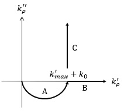

stratified.isommerfeld
With the Sommerfeld integrator one can perform integrations along the Sommerfeld integration path, as described in more detail in Appendix B of [1].

We use the integration path of Paulus et al. [2] and start with the semiellipse A that begins at the origin and ends at a wavenumber determined by a scaling factor (see below) and the maximum wavenumber of all layerstructure materials, with an additional safety margin of the free-space wavenumber. Depending on the z:r ratio the path extends to infinity either along the real (Bessel function) or imaginary (Hankel function) direction. For details see [1,2].
- [1] Hohenester, Nano and Quantum Optics (Springer 2020).
- [2] Paulus et al., Phys. Rev. E 62, 5797 (2000).
Contents
Initialization
% initialize Sommerfeld integrator % layer - layer structure % i1 - layer index for field positions % 'semi1' - scale real axis of semiellipse A % 'semi2' - scale imaginary axis of semiellipse A % 'ratio' - z : r ratio which determines integration path % 'op' - options for ODE integration % 'cutoff' - cutoff parameter for matrix-friendly approach of Chew obj = stratified.isommerfeld( layer, i1, PropertyPairs );
The optional properties can be either passed as property pairs in the initailization or set explicitly after initialization
layer = stratified.isommerfeld( layer, i1, 'semi1', 5 );
layer.semi2 = 0.1;
Methods
The Sommerfeld integrator has to be used together with a function that usually return the integrand of the reflected scalar Green function.
% integrand function for scalar reflectd Green functions % layer - layer structure % data.r - radii % data.z - z-values % kr - radial wavenumner, complex-valued % kz - z-component of wavevector im medium i1 % mode - 'bessel' for Bessel or 'hankel' for Hankel functions fun = @( data, kr, kz, mode ) greenrefl( layer, data, kr, kz, mode );
See below for some examples. Once the function is defined, we can compute the Sommerfeld integral through
% evaluate Sommerfeld integral % r - radii % z - z-values % fun - Green scalar function % k0 - wavenumber of light in vacuum % 'singular' - use renormalization approach of Chew y = eval( obj, r, z, fun, k0, PropertyPairs );
The function returns a structure with the same elements as set in the user-defined function, where each element is of the dimensions specified for r and z. For testing purposes we additionally provide another function that gives the cumulative integral along the integraion path.
% cumulative Sommerfeld integral along integration path % 'singular' - use renormalization approach of Chew % 'nquad' - number of output points along path y = cumeval( obj, r, z, fun, k0, PropertyPairs );
Examples
- demostratsomint01.m - Sommerfeld integration, plot integrand.
- demostratsomint02.m - Sommerfeld integration, plot integrand w/o quasistatic contribution.
Copyright 2023 Ulrich Hohenester